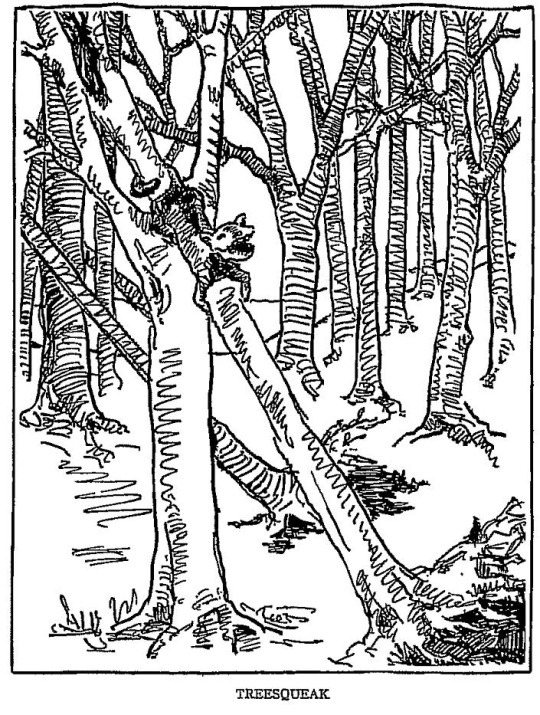

The Treesqueek is a weasel-like creature that nests and resides in the treetops. While mostly harmless and sociable, the Treesqueek is capable of imitating any sound it likes. Pair that with it's dastardly ability to camoflauge itself to the branches it lives on and this thing often will cause people to get lost in the woods.
The above illustration of the Treesqueek shows its ability to curl around branches.